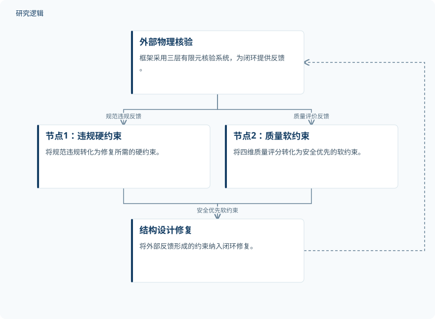

摘要解读
验证驱动的闭环多智能体大语言模型规范合规结构设计框架
Verication-driven closed-loop multi-agent large language modelframework for code-compliant structural design
解读更新 2026-11-10 17:45 · 依据公开摘要整理，未核验全文细节
大语言模型生成的结构设计，如何接受可追溯的规范核验，而不只依赖模型自我纠错？这项研究将外部物理核验接入多智能体修复闭环，阅读价值在于观察：核验反馈如何转化为设计约束，以及摘要报告的改进究竟支持哪些结论。
文章目录
结构设计不能止于一次生成
摘要指出，多智能体大语言模型系统已被用于结构设计，但多数采用一次性生成，无法核验自身输出，因此难以适应安全关键任务。这里的核心问题不是设计描述是否流畅，而是生成结果能否通过物理与规范层面的检查。
研究选择引入外部物理核验器，将检查反馈送回修复流程，而非仅相信大语言模型的自我纠错。其关注点由“生成一个方案”转向“依据核验反馈持续修复方案”。
双节点分别处理违规与设计质量
框架将三层有限元核验系统与双节点循环结合：节点1把规范违规转为修复时必须满足的硬约束；节点2把四维质量评分转为安全优先的软约束。两者分别处理明确违规与质量评价，但摘要没有展开各核验层及评分维度。
检索增强的规范库则用于将每项违规追溯到具体条款。由此，反馈不只是要求模型笼统地“改好”，而是为修复提供规范依据，并区分硬约束与软约束。
依据摘要整理的核验—修复闭环


仅概括摘要明确描述的外部核验、双节点约束与闭环修复关系，不代表论文原图，也不补充未报告的实验配置。
下载 SVG图示关系说明
实线表示相邻阶段的信息流，虚线表示跨阶段联系或反馈。
外部物理核验 → 节点1：违规硬约束：规范违规反馈；外部物理核验 → 节点2：质量软约束：质量评价反馈；节点1：违规硬约束 → 结构设计修复：硬约束；节点2：质量软约束 → 结构设计修复：安全优先软约束；结构设计修复 → 外部物理核验：返回核验闭环
合规率提高，材料用量同时下降
摘要报告，在覆盖多种结构类型的44个案例中，规范合规率从56.8%提高至98.6%，综合评分从63.8提高至71.4（p<0.000001），材料用量约减少5.8%。这些结果体现了该案例范围内合规性、综合评价与材料使用的共同变化。
移除任一节点都会使性能下降；在所测试的两种骨干大语言模型之间，合规率未出现可检测的变化。作者据此将这里的合规表现归因于外部核验器，而非模型本身。摘要还称，框架、案例基准和全部实验脚本已开源，以支持复现。
案例构成与比较口径仍需进一步核对
仅凭摘要，无法判断案例如何选取、各结构类型如何分布，以及荷载、边界条件和适用规范的覆盖范围；也无法明确合规率的统计单位、综合评分的计算方式及显著性检验设置。这些属于当前资料未展开的信息，不能据此认定论文没有报告。
摘要也未说明完整的比较基线、修复成本与失败案例。两种骨干模型间未检测到合规差异，不等于证明所有模型表现相同；案例中的改进也不能直接外推为实际工程部署的安全保证。
阅读启发：关注核验反馈如何约束修复
阅读启发：对于结构生成式设计，可优先追问规范条款如何转成可执行约束、硬约束与质量软约束如何协调，以及修复后如何再次接受核验。进一步阅读时，值得核对消融比较与失败案例，理解外部核验带来的收益及其适用边界，而不急于将其视为通用的自动设计保证。
以上为本站阅读启发与建议，不是论文已验证的结论。